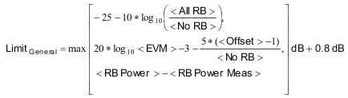
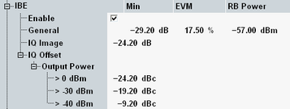

The inband emission is the relative UE output power in non-allocated resource blocks (RBs). Inband emissions are interferers in the subcarrier range that is potentially used by other connected UEs. 3GPP defines a complex combined inband emission limit described below.
- The minimum of the combined limit is -29.2 dB. In the R&S CMW, this general minimum is configurable.
- A general component is considered for all non-allocated RBs.
- For non-allocated RBs at image frequencies of allocated RBs, an IQ image component is added to the general component.
- For RBs at the carrier frequency or next to the carrier frequency, an IQ offset component is added to the general component.
So the most complex limit must be determined for a non-allocated RB located both at an image frequency and next to the carrier frequency. In that case, the general component, the IQ image component and the IQ offset component have to be added. Then the result must be compared to the general minimum and the bigger value of both applies.
The following table provides an overview of the three components.
Component | Value | Applicable RBs |
|---|---|---|
General | See formula below table | Non-allocated RBs |
IQ image | -24.2 dB | Image frequencies |
IQ offset | -24.2 dBc to -9.2 dBc, depending on TX power | Carrier frequency |
For contiguous uplink carrier aggregation and for eMTC, the carrier frequency and thus the image frequencies depend on the transmitter architecture. The measurement is informed about the architecture via settings, see:
| ||
The general limit is derived using the following formula:

- <All RB> = total number of RBs within the channel bandwidth of the allocated component carrier (as defined by 3GPP, e.g. 75 RBs for 15 MHz channel bandwidth)
- <No RB> = number of allocated RBs in the slot
- <EVM> = maximum allowed EVM in percent (configurable), see "Error Vector Magnitude"
- <Offset> = distance of the RB from the closest allocated RB
- <RB Power> = -57 (configurable)
- <RB Power Meas> = arithmetic mean value of the average powers in all allocated resource blocks (dBm/RB)
The general minimum, the variables <EVM> and <RB Power>, the IQ image component and the IQ offset component can be set in the configuration dialog, depending on the modulation scheme.

With carrier aggregation, RBs are allocated for one CC only. The limits apply to all component carriers. The measurement displays inband emission result diagrams for all carriers.